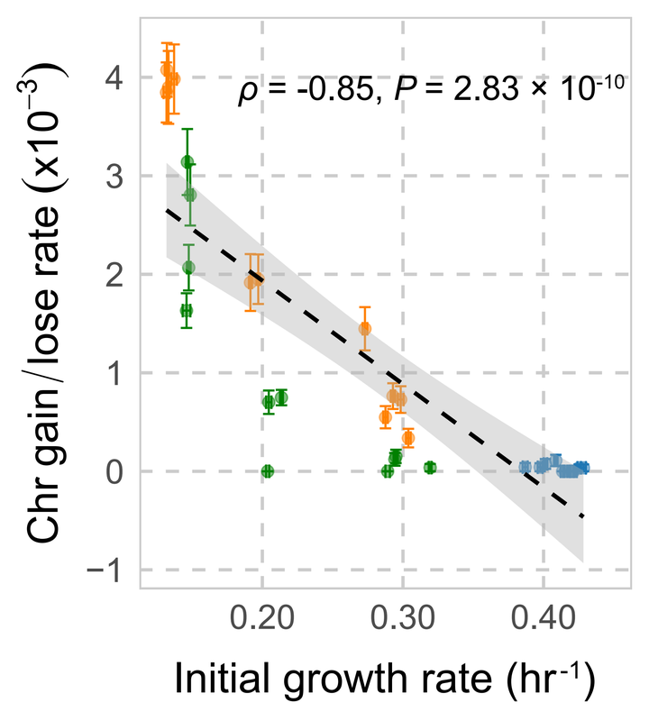
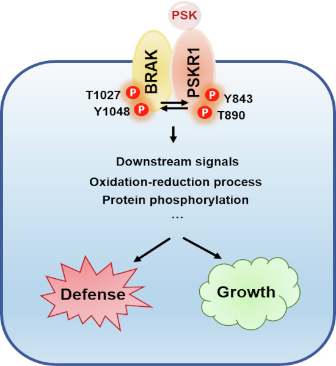
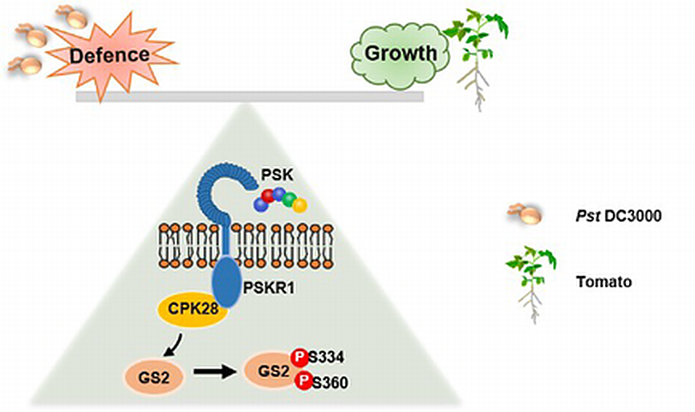
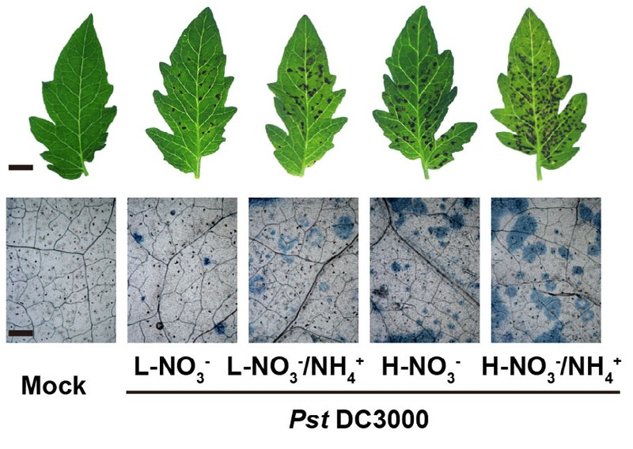

Shuting Ding
MIDAS Postdoctoral Fellow，University of Michigan, USA
✉️ shutingdin@gmail.com
🐦 Twitter
📚 Google Scholar
🧬 ORCID
MIDAS Postdoctoral Fellow，University of Michigan, USA
✉️ shutingdin@gmail.com
🐦 Twitter
📚 Google Scholar
🧬 ORCID
I am a plant biologist interested in how plants sense environmental change and reprogram their growth, metabolism, and stress responses. My earlier research used molecular genetics, biochemistry, and plant physiology to uncover how peptide signals, nutrient sensing, and intracellular signaling pathways regulate growth and environmental adaptation in tomato (Solanum lycopersicum). This work established my interest in a broader question: how do plants coordinate molecular signals across cells and regulatory pathways to survive changing environments?
I am now expanding this research from individual signaling pathways to genome-scale regulatory networks. As a MIDAS Postdoctoral Fellow at the University of Michigan, I combine large-scale single-cell data with artificial intelligence to investigate how plant gene regulatory systems reorganize across species, genotypes, and stress conditions.
I study how small signaling peptides (such as phytosulfokine and systemin) act as messengers in tomato plants. These peptides are recognized by specific receptors (like PSKR1) to trigger downstream responses. My research has revealed that peptide hormones can optimize plant growth and activate defense pathways against pathogens by modulating cellular activities and gene expression.
Understanding how tomatoes cope with environmental stresses is a central theme of my work. I examine tomato responses to drought, high temperature, and pathogens at both physiological and molecular levels. By analyzing stress-responsive mutants and performing multi-omics studies, I aim to uncover how signaling components (peptides, G-proteins, hormones) help reprogram tomato physiology to survive adverse conditions.
Stress and signaling often lead to changes in plant metabolism. I investigate how tomato plants rewire their metabolism under stress, such as accumulating defensive compounds (e.g., phenolamides) or altering primary metabolic pathways. This research helps identify metabolic markers of stress resilience and how manipulating signaling pathways can enhance those protective metabolic responses.
I am also interested in applying CRISPR/Cas9 genome editing to tomato improvement. By precisely targeting genes involved in peptide and G-protein signaling, I work on creating tomato lines with enhanced stress tolerance and growth traits. This precision-breeding approach accelerates the development of tomato varieties better equipped to handle biotic and abiotic challenges.




For the full list of publications, visit my Google Scholar.